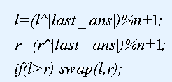

第一行两个正整数n,m,t。n表示猪圈数，m表示询问数，t=0表示方老师没有对询问进行加密，t=1表示方老师对询问进行了加密，解密方法如下：

其中^表示异或操作，last_ans表示上一次询问的答案，对于第一次询问，last_ans=0。
第二行n个整数，第i个整数x[i]表示标号为i的猪圈中剩余猪的数量。
接下来m行每行两个正整数l,r表示一组询问。
5 5 1
1 3 -4 5 -3
3 4
1 1
2 3
2 4
3 5
2
5
-1
5
4
N,M<=500000,|x[i]|<=8000000